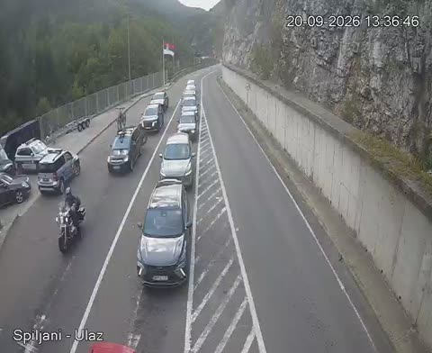

Spiljani povezuje Srbija i Crna Gora, na putu E65/E80, naspram Dracenovac (MNE). Alternativa ka istoj zemlji: Gostun. Gasolina kombinuje graničnu policiju, kameru uživo i (gde postoji) susednu stranu radi realne procene.

▶ Pusti kameru uživoNa vrhu stranice prikazujemo trenutnu procenu čekanja za oba smera, plus kameru uživo ako postoji. Za detaljan prikaz sa svih izvora (granična policija, susedna strana, prijave vozača) idi na granice.html.
Spiljani povezuje Srbija → Crna Gora, naspram Dracenovac (MNE) na putu E65/E80.
Da - Gostun vodi ka istoj zemlji. Kalkulator rute na Gasolini poredi oba prelaza kad planiraš put, a stranica granice.html direktno pokazuje koji je trenutno brži.